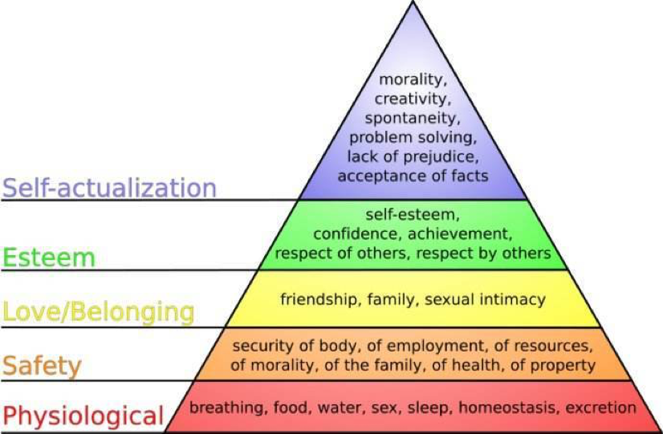

chapter2.1--handout
Background Information
Sigmund Freud
奥地利心理学家，精神分析学的创始人，提出了潜意识，自我，本我，超我以及梦的解析等理论，关于移情、阻抗、防御机制、俄狄浦斯情结、生之本能，死之本能的阐述影响了心理治疗的体系，其理论对心理学影响深远。
John Dewey
美国哲学家、教育家，实用主义的集大成者。杜威主张成功的教育是一直延续下去的，即现在说的终身教育。他反对传统的灌输和机械训练的教育方法，主张从实践中学习。
杜威的教育思想曾对中国教育界、思想界产生过重要影响，他曾在中国多地讲学，由胡适等人担任翻译。胡适曾在短文中写道：“自从中国与西洋文化接触以来，没有一个外国学者在中国思想界的影响有杜威先生这样大的。”
Sir Christopher Wren
英国天文学家、建筑师。他设计的建筑物庄严、整齐、明澈，具有雕琢美感的巴洛克建筑风格，对英国及欧洲的建筑影响很大。
John Davison Rockefeller
美国慈善家、资本家，1870年创立标准石油，在全盛时期垄断了全美99%的石油市场，是十九世纪第一个亿万富翁。
John Herbert Dillinger
是二十世纪三十年代大萧条时期中，活跃于美国中西部的银行抢匪和美国黑帮的一员。尽管受到警方等人的厌恶，甚至被当时美国调查局（后来改组为联邦调查局）冠上“头号公敌”（“Public Enemy No.1”）的称号，但是当时人们却仍对他尊崇有加，认为他是现代罗宾汉，而其发迹和成名也离不开当时美国大萧条和禁酒令的社会背景。
叶卡捷琳娜二世·阿列克谢耶芙娜
史称叶卡捷琳娜二世（英语：Catherine II），后世尊称其为叶卡捷琳娜大帝（Catherine the Great）。是俄罗斯历史上唯一一位被冠以“大帝”之名的女皇。叶卡捷琳娜在位时期因治国有方、功绩显赫，当时使俄罗斯成为名副其实的欧洲最强大的国家。其才干与名气也闻名海内外，成为俄罗斯人心目中仅次于彼得一世的一代英主。
Mrs.Lincoln:"How dare you be seated in my presence until I invite you!"
这段趣闻出现在亚当·巴多上校的回忆录中。玛丽·托德，林肯总统的夫人。美国历史上最著名、也最受争议的“第一夫人”之一。因为脾气暴躁，甚至被称为“白宫泼妇”。
Vocabulary
gratify
表示使高兴；使满意，to please someone, or to satisfy a wish or need，类似原文中讲，愿望得到满足：these wants are gratified. 同样当你想说感谢的时候，也可以比较正式的用Please accept my gratitude. （同源词汇要联想哦～）
symphony
💧n. 交响乐；谐声，和声
原文：This desire inspired Sir Christoper Wren to design his symphonies in stone.
💧英文例句：The symphony was dreadfully mangled.
那首交响曲被糟蹋得不成样了。
repercussion
💧n. 反响；弹回；反射；浮动诊胎法；令人不满意的后果
原文：But these crude methods have sharply undesirable repercussions.
💧英文例句：China succeeded in exploding its first atom bomb which provoked great repercussion around the globe.
中国成功地爆炸了第一颗原子弹，在全世界引起了巨大的反响。
unfaltering
💧adj. 坚定的；稳步的，稳定的；专心的
原文：Here is a gnawing and unfaltering human hunger...
💧英文例句：My convictions are unfaltering. I remain true to the ideals I have expressed.
我的信仰不会动摇，我会一直忠于我之前表达过的理想。
Crush Your Problems
But there is one longing / almost as deep, / almost as imperious, / as the desire for food or sleep / which is seldom gratified.
💧这个句子的层次有多个并列关系，简化一下可以理解为：almost as deep and imperious as the desire for food or sleep,像吃与睡这样的深刻需求，用两个almost并列，可以使语气更强烈。He didn't speak, mind you, of the "wish" or the "desire" or the "longing" to be appreciated. He said the "craving" to be appreciated.
💧wish，desire，longing，craving之间的区别在哪里呢？
💧wish可以理解为是希望、愿望，比如GOT（权力的游戏）里拂晓神剑在combat之前讲I wish you good fortune in the wars to come.这里真的希望对手好运么，并不，可见wish的情感程度啦～
💧desire是指内心的欲望、渴望。再举一个GOT的栗子，玫瑰家全家被灭门后，玫瑰奶奶的一段对话，这种血海深仇之后，提到It is your heart’s desire. 内心渴望的自然是vengeance（复仇）与justice（正义），可以感受到程度吗？
💧longing指prolonged unfulfilled desire or need，长久的渴望与期盼，longing to be free，longing for peace这类，同一个程度的词还可以有yearning，thirst，hungriness
💧craving的程度是最高的，比如说一个吸毒者的毒瘾可以讲craving for drug，对追名逐利可以讲craving fame and fortune，属于是an intense desire for some particular thingHere is a gnawing and unfaltering human hunger, / and the rare individual / who honestly satisfies this heart hunger / will hold people in the palm of his or her hand / and "even the undertaker will be sorry when he dies."
💧Here is和there be是同类表达，说明存在一种一直折磨人的欲望，只有少数真正能满足这个欲望的人，可以将别人玩弄于鼓掌。
这个句子的理解，重点在于拆解主干（and表示并列，who之后的内容修饰之前的词），找到逻辑关系词，可以更清楚的分析。
💧"even the undertaker will be sorry when he dies." 很多同学觉得这句出现的很突兀，这里可以理解为无论是伟人还是普通人，即使是承办丧葬的服务人员 ("undertaker")也渴望着“this heart hunger ”即被人赏识/恭维/夸赞，可惜丧葬服务员的服务对象是死人，死人是无法表达对他们的赞赏的。这些 "undertakers" "享" 有最低的工作满意度，那么当他们死了,他们肯定会遗憾。The disagreeable prospect of serving time seems remote / so long as he can gloat over his likeness / sharing space with pictures of sports figures, movie and TV stars and politicians.
💧这里的 serving time 指的是坐牢时间、服刑时间，可不要理解错了哦~
💧so long as 这里用法和 as long as一样，表示：只要......
💧gloat over 幸灾乐祸，欣喜若狂
这句话的大意为：坐牢服刑的痛苦（The disagreeable prospect ）好像还很遥远，只要他的相片也和那些体育人物、电影电视明星还有政治家这些名人同样占据着篇幅，就够他偷着乐了。
Content Analysis
今天的题目"the big secret"很吸引眼球，这个重大的秘密是什么呢？
作者先告诉你，想要驱动一个人做事，只有给他需要的东西，他才会心甘情愿去做。
接着，作者列出了八项人们需要的东西：一、健康，和生命的保护。二、食物。三、睡眠。四、金钱，和金钱所能买到的。五、生命的后顾。六、性生活的满足。七、子女们的健全。八、重视感。而最后一项“A feeling of importance” 是强烈“deep”且迫切“imperious”，却难以被满足“gratified”。
作者列举了四位名人的话，来论证这一感觉的重要性：
- Sigmund Freud ：“everything you and I do springs from two motives: the sex urge and the desire to be great.”我们做的所有事情都源于两种动机：性冲动和成就感。
- John Dewey：" the deepest urge in human nature is the desire to be important." 人性中最深的渴望就是对“成就感”的追求。
- Abraham Lincoln：“Everybody likes a compliment.” 每个人都喜欢得到称赞。
- William James："The deepest principle in human nature is the craving to be appreciated." 人类的本性就是对于“被欣赏”的渴求。
接着，作者用引用父亲的例子，阐释了“the feeling of importance”是区别人与动物的最明显的特征了。
那么人们是如何获取存在感的呢？
A. From social success 从社会成就中获取重视感；
作者列举了林肯、狄更斯、雷恩爵士以及石油大亨洛克菲勒的例子；
B. From crime commitment 从实施犯罪中寻找存在感；
少男少女们充满着对虚名的盲目追求，甚至走上犯罪道路，在被捕后他们的第一个要求，就是希望能出现在报纸的报道上。再比如，罪犯John Dillinger他以自己是美国头号公敌为荣。
C. From reputational emphasis 从名声中感受重视感；
作者又举例了：华盛顿、哥伦布、俄国女皇叶卡捷琳娜二世、林肯夫人这些名人非常重视自己的地位和声名，还有一些百万富翁，资助Admiral Byrd去南极探险，附带一个条件，是许多冰山都需取用他们的名宇。而法国大作家雨果，甚至希望把巴黎，改称成他的名字。
D. Fromm becoming invalids 强行刷存在感（下节内容中会提到）；
对于卡耐基提出的人类最深切的欲望之一“a feeling of importance”你是否深有同感呢？日常中，你是否发现了自己或者身边人也在追寻着这种被重视感/存在感？
（老师想到，抖音上的大神们，嘻嘻）
Today's Bonus
💧文中作者提到了八项人们的需求，老师再为大家补充下经典的马斯洛需求层次理论吧。
💧马斯洛理论把需求分成生理需求（Physiological needs）、安全需求（Safety needs）、爱和归属感（Love and belonging）、尊重（Esteem）和自我实现（Self-actualization）五类，依次由较低层次到较高层次排列。下面这个金字塔形就是马斯洛需求层次的具体内容哦~

💧文中还提到了佛洛伊德这位大名鼎鼎的精神分析学开创者，他的理论可是对后世影响深远。不过，老师这里想说的是他的理论对电影的影响，哈哈，没想到吧！很多经典电影都有着精神分析学的浓重色彩，推荐以下几部，大家有兴趣可以看看哦！
大卫·林奇《穆赫兰道》
David Lynch Mulholland Drive
《穆赫兰道》（Mulholland Dr.）是大卫·林奇执导的一部悬疑惊悚片，由娜奥米·沃茨、劳拉·哈灵主演，于2001年10月12日在美国上映。
影片主要讲述了经历了一场在蜿蜒的穆赫兰道上并令其失忆的车祸后，丽塔和一个立志要做好莱坞演员的女孩围绕着洛杉矶寻找线索和答案，随之而来的是一个扭曲的超乎梦想与现实的冒险。
希区·柯克《爱德华医生》《精神病患者》《后窗》
Alfred Hitchcock
《爱德华医生》作为一部艺术作品，同时具备了认识意义，美学意义以及教育意义等多重属性，不仅具有普世价值，还具有极高的研究价值，是好莱坞电影史上永恒的经典。一部电影的成功必须是形式和内容的双重成功，如果说“精神分析学”构成了这部影片的内容，那么，关于本片的形式，又是另一种魅力所在。
不管是创新叙事模式还是探索新的电影语言，希区柯克总是在不断的尝试创新。在他的电影中，他通过制造悬念的方式，表现出角色紧张的情绪，危险的关系，让观众义无反顾的投入到他营造的气氛中去。在他的电影中，观众常常可以看见一些打破常规的主观镜头，他善于用主观镜头营造出令人恐惧的氛围。在《后窗》中，杰佛瑞偷窥时，希区柯克用主观镜头来变现，使紧张的气氛从银幕上弥漫到银幕下，让观众和电影中的角色一样紧张。在《精神病患者》中，当玛丽莲的妹妹冒险进入诺曼家中的时候，希区柯克也使用了主观镜头来表现金正和不安。这些大胆的主观镜头，构成了希区柯克独特的“悬疑美学”，让电影在充满刺激，紧张的时候还极具观赏性。
在希区柯克的电影中，观众经常可以看见很多充满隐喻的画面，比如《精神病患者》中诺曼的小屋摆满了鸟类的标本，而诺曼坐在巨大的标本之下，这本来就是一种隐喻，不仅表现出了诺曼的绝望和孤寂，也表现出了他的残忍和冷酷。希区柯克使用这些充满隐喻的画面让故事的表达更加流畅，叙事语言更加优美，在给观众讲故事的同时，还不忘带给观众艺术的享受。
时至今日，希区柯克的电影已经成了影史上不可忽略的经典，他已经不仅仅是一位导演，也成了一个时代的象征。他用自己的方式创造了独一无二的类型电影艺术，让悬疑电影也具有了艺术性。他运用大量的主观镜头打破常规的叙事模式，将佛洛依德的理论放置于电影中，显示出了他的智慧和博学。就像他自己所说的那样，“我必须制造悬念，否则观众就会感到失望。”